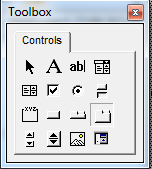
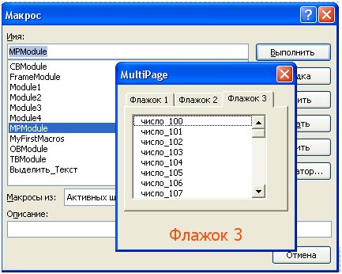

августа 28, 2015
августа 28, 2015  admin
admin Элемент управления Multipage
августа 28, 2015 admin
Компонент Multipage это набор страниц, предоставляет возможность добавлять на поверхность формы несколько страниц, это эффективно в том случае, если элементов управления слишком много, и все они не умещаются на поверхности.
Multigape предоставляет набор из нескольких страниц, каждая из которых содержит собственный заголовок и собственный набор элементов управления. Для перехода между страницами достаточно кликнуть по заданному корешку.

рис . 1.1 Элемент управления MultiPage на панели ToolBox

рис. 1.2 Элемент управления MultiPage на форме
После того, как вы выбрали компонент MultiPage в окне ToolBox и перетащили его на поверхность формы (UserForm), у вас будет только две вкладки для Набора страниц. Если вы кликните правой кнопкой мыши по корешку MultiPage vba, то вам откроется контекстное меню, со следующими пунктами:
Основные свойства для класса Multipage vba языка следующие:
MultiRow – свойство языка vba может принимать логическое True или False. Само свойство актуально в том случае, если вкладок страниц слишком много и они не помещаются в на поверхности формы. Если будет установлено значение False, то все корешки будут находиться на одной линии, для перехода к тем вкладкам, которые не видно, будут добавлены дополнительные кнопки. Если значение установлено в True – то при большом количестве вкладок, они будут располагаться в несколько строк.
TabOrientation – позволяет задать, где будут расположены корешки страниц, свойство предоставляет четыре значения: fmTabOrientationTop – расположении вверху, fmTabOrientationBottom – внизу, fmTabOrientationLeft – слева и fmTabOrientationRight – справа.
SelectedItem – содержит ссылку на объект выбранной страницы
Value – свойство позволяет получить номер той вкладки страницы, которая выбрана в данный момент, нумерация начинается с нуля.
Style – определяет стиль вкладок: fmTabStyleTabs – в виде закладок, fmTabStyleButton – в виде кнопок и fmTabStyleNone – вкладки отсутствуют
Основным событием для класса MultiPage является событие Change, оно возникает при переходе между вкладками.
Хорошо, теперь давайте напишем простой пример с компонентом VBA MultiPage.
Добавьте в окно Проектов новый модуль и форму (меню Insert, пункты UserForm и Module). Я всегда даю соответствующие имена для формы и модуля (свойство Name), в данном случае MPModule и MPForm. Теперь надо настроить внешний вид формы. Нм понадобятся только три элемента управления из окна ToolBox (меню View, пункт Toolbox):
MultiPage – добавляем а форму данный элемент управления, у вас автоматически появятся два флажка, кликаем по одному из флажков и жмем New Page, это добавить третью вкладку. В свойстве Caption пропишите для каждой вкладки: Флажок 1, Флажок 2 и Флажок 3.
ListBox – добавьте на поверхность объекта MultiPage список (ListBox), точнее, три списка, по одному на каждую вкладку.
Label – в самый низ формы добавьте компонент Надпись, он должен находится на поверхности формы UserForm. Свойство Caption оставьте пустым.

Теперь нам нужно прописать код для формы, жмем в окне проектов на наш объект UserForm (MPForm) и нажимаем кнопку View Code. В окне редактора кода прописываем следующие процедуры:
Private Sub MultiPage1_Change()
Label1.Caption = MultiPage1.SelectedItem.Caption
End Sub
Private Sub UserForm_Initialize()
For i = 0 To 50
ListBox1.AddItem “число_” & i
Next
For i = 50 To 100
ListBox2.AddItem “число_” & i
Next
For i = 100 To 150
ListBox3.AddItem “число_” & i
Next Label1.FontSize = 16
Label1.ForeColor = &H1055F2
Label1.TextAlign = fmTextAlignCenter
Label1.Caption = MultiPage1.SelectedItem.Caption
End Sub
Давайте разберем код:
MultiPage1_Change – тут происходит обработка события Change, которое возникает при клике по флажкам. Каждый раз, когда мы будем переходить на ту или иную вкладку, в свойство Caption объекта Label будет записываться название выбранного флажка.
UserForm_Initialize – данная процедура будет выполняться при инициализации формы. Тут есть три цикла for, по одному на каждый объект ListBox, по сути, в цикле происходит простое заполнение списков. Далее идут настройки свойств:
В принципе все, не забывайте, что в редакторе кода для модуля (макроса), нужно прописать процедуру, которая будет выводить форму:
Sub MPModule()
MPForm.Show
End Sub
Ну, вот и все, в статье мы кратко рассмотрели класс MultiPage VBA и написал небольшой пример.